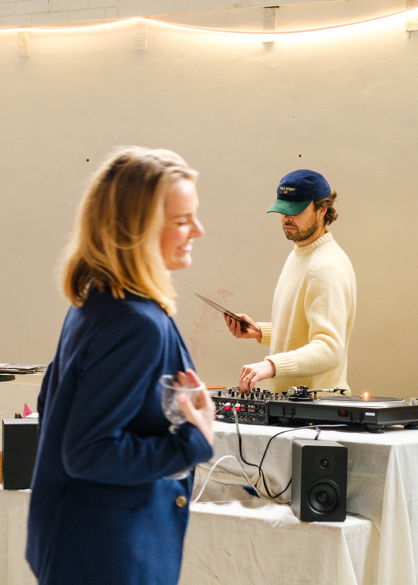
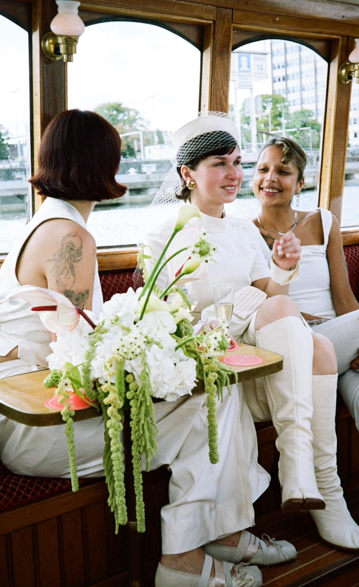
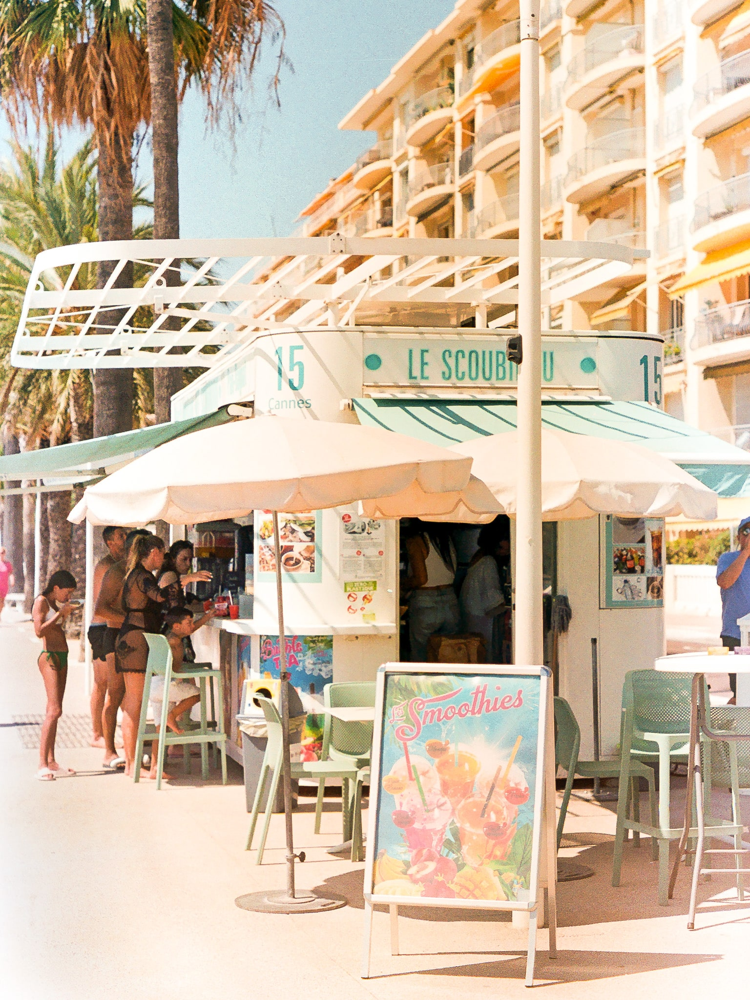
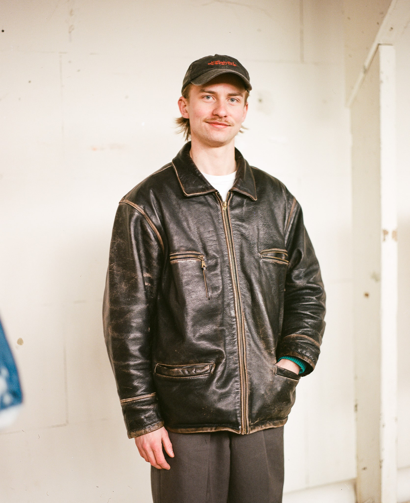

Evenement fotografie met sfeer, karakter en een analoge uitstraling
Evenement fotografie is er voor iedereen die een gebeurtenis, groot of klein, niet alleen in het moment zelf wil beleven, maar ook lang daarna. Jaren later kunnen beelden, net als geuren en geluiden, onze herinneringen weer tot leven wekken. Met name wanneer foto's écht de sfeer van het moment vangen, brengen ze ons zo weer terug naar wat we ooit voelden en beleefden.
Als evenement fotograaf leg ik mij toe op het vastleggen van die beleving. In deze tekst vertel ik je wat evenement fotografie voor mij inhoudt en hoe ik te werk ga: vanuit een liefde voor tijdloze, analoge en editorial-geïnspireerde beelden, met een artistieke benadering die momenten bewaart als iets blijvends.
Gewoon nieuwsgierig naar wat voor foto's ik neem? Helemaal onderaan deze pagina vind je een slideshow met voorbeelden. Nog liever direct even contact? Klik dan op de knop 'contact me!', rechts op het scherm. Ik hoor graag van je!
Wat versta ik onder evenement fotografie?
Zoals de naam omschrijft, draait evenement fotografie om het professioneel vastleggen van een bijzondere gebeurtenis. Maar wat legt een evenementenfotograaf nu écht vast? Alleen wat er voor de lens gebeurt, of juist ook het verhaal en de sfeer daarachter?
Voor mij gaat evenement fotografie om het vertalen van sfeer, emotie en energie naar tijdloze beelden met een analoge uitstraling. De beleving staat hierbij centraal. Foto’s mogen laten voelen hoe het was om daar te zijn.
Het werkgebied van een event fotograaf is breed. Zelf richt ik mij graag op evenementen waarbij sfeer, beleving en esthetiek een belangrijke rol spelen. Denk aan intieme diners, creatieve of kunstzinnige bijeenkomsten, bijzondere teamuitjes en zakelijke events met een sterke merkidentiteit. Elk event heeft een eigen karakter en dat zichtbaar maken is mijn favoriete onderdeel van het werk. Zo ontstaan beelden die niet alleen herinneren, maar ook perfect inzetbaar zijn voor bijvoorbeeld marketing of interne communicatie.
Van moment naar verhaal: evenement fotografie die sfeer met gevoel vastlegt
Zojuist schreef ik dat evenement fotografie voor mij gaat over het vastleggen van sfeer en gevoel. Daarnaast zoek ik ook graag naar de rode draad van het moment. Draait het evenement bijvoorbeeld met name om de ontspanning, het plezier of de liefde van de aanwezigen? Die kern vormt het verhaal dat ik met mijn beelden wil navertellen.
Een voorbeeld hiervan is het evenement Studio Collective, waarvan je onderaan deze pagina foto’s kunt bekijken. De makers die daar hun werk toonden, deelden meer dan alleen hun creaties. Ze lieten hun passie zien en het lef om zichzelf zichtbaar te maken. De trots die ik bij hen voelde, werd voor mij de essentie van het evenement. Daarom fotografeerde ik iedere maker samen met zijn of haar werk. Zo ontstond een serie portretten die samen het verhaal van de dag vertellen.
Naast sfeer en emotie vind ik het belangrijk dat beelden esthetisch sterk zijn en recht doen aan de locatie. Ik houd van foto’s die net even anders zijn: wat kunstzinniger, met aandacht voor compositie, licht en details. In combinatie met mijn liefde voor vintage en analoge esthetiek krijgen beelden soms een editorial karakter. Natuurlijk hoeft niet elke foto uitgesproken artistiek te zijn. Juist de afwisseling tussen spontane momenten en meer verstilde beelden zorgt voor een gelaagd en eerlijk beeld van het evenement.
Analoge evenement fotografie en de kracht van karakter
Voor mijn evenement fotografie werk ik met zowel digitale als analoge camera's. Beide mediums vragen om hun eigen werkwijze en creëren beelden met een uniek karakter. Digitale fotografie biedt snelheid en de mogelijkheid om direct mee te kijken. Bij analoog fotograferen is het eigenlijk precies andersom: je vertraagt, observeert en maakt keuzes met volle aandacht voor licht, timing en compositie. Bij deze vorm van fotografie geef je jezelf over aan het onbekende en dat zorgt vaak voor verrassende en oprechte beelden.
Hoewel digitale en analoge fotografie qua schoonheid dicht bij elkaar liggen, verschillen ze duidelijk in gevoel. Digitaal is helder, direct en verfijnd: kleuren springen meer en details zijn scherp. Analoog voelt persoonlijk, tactiel en tijdloos: met zachte contrasten, subtiele kleuren en korreligheid. Het karakter van beelden op film raakt mij. Daarom streef ik ook bij mijn digitale fotografie naar een analoge uitstraling. Met mijn Fujifilm X-T4 kom ik dankzij specifieke instellingen al dicht bij die filmlook, die ik tijdens de nabewerking verder verfijn.
Wanneer je mij inschakelt als event fotograaf kun je zelf kiezen wat het beste past bij jouw evenement: analoge fotografie, digitale beelden of een combinatie van beide. Samen kijken we naar de sfeer die je wilt overbrengen en welk medium dat het mooiste weerspiegelt. Hieronder vast wat redenen voor elk type fotografie voor je op een rijtje:
Wanneer kiezen voor analoge fotografie?
- Warme, tijdloze en unieke sfeer
- Artistieke of intieme evenementen
- Bijzondere, artistieke uitstraling
- Een bewuste vertraging in het moment
Wanneer kiezen voor digitale fotografie?
- Als het prettig is dat foto's sneller kunnen worden genomen
- Ideaal voor grote, dynamische evenementen
- Veel beeldmateriaal en extra zekerheid
- Scherp, helder en veelzijdig voor marketing
Mijn werkwijze als evenement fotograaf
Een prettige samenwerking begint met persoonlijk contact. Tijdens een telefonisch gesprek, chat of mailwisseling bespreken we jouw wensen, het doel van de evenement fotografie en praktische zaken zoals locatie, tijdsduur en stijlvoorkeuren (analoog, digitaal of beide). Zo zorg ik dat ik precies weet wat belangrijk is om vast te leggen.
Bij aankomst op locatie maak ik graag kennis, alvorens de sfeer in mij op te nemen. Ik observeer het licht, de dynamiek van de ruimte en de momenten die belangrijk zullen zijn voor het verhaal van het moment. Zodra het evenement begint, start ik met fotograferen. Wanneer er vooraf al mooie details of opbouwmomenten zijn, leg ik die natuurlijk ook met plezier vast.
Tijdens het fotograferen beweeg ik mij discreet tussen de gasten door. Ik stel mij open, vriendelijk en benaderbaar op, zonder de aandacht naar mij toe te trekken. Het is voor beide partijen - genodigden en fotograaf - prettig wanneer zij zich op hun gemak voelen. Positieve energie is voelbaar en vertaalt zich ook naar spontane, ontspannen foto's. Willen mensen graag een geposeerde foto, dan zorgt een zachte uitstraling als het goed is voor een lage drempel om hiernaar te vragen.
Tijdens evenementen gebruik ik de volgende camera's:
Fujifilm X-T4 - digitaal

Olympus MJU i - Analoog compactcamera (point-and-shoot) met ingebouwde flits, 35mm, 36 shots per rolletje.

Pentax K1000 - Analoog, 35mm, 36 shots per rolletje

Pentax 67 - Analoog, 120 filmformaat (medium format), 10 shots op een rolletje, prachtige kwaliteit. Iets langzamer in gebruik. Goede keuze voor portretten.

Mijn doel is altijd om een mix van overzicht, sfeer, details en portretten vast te leggen: de verschillende elementen van een fotografisch verhaal. Na afloop lever ik mijn fotorolletjes in bij het lab en laat ik de opdrachtgever zijn of haar favoriete digitale beelden kiezen. De gekozen foto's bewerk ik vervolgens zorgvuldig na. Analoge beelden worden na ontwikkeling en scanning in dezelfde stijl bewerkt, zodat het geheel één esthetisch verhaal vormt. Ik lever de foto’s vervolgens aan via een online album waarin ze eenvoudig kunnen worden gedownload of gedeeld met collega’s, gasten, vrienden of familie.
Wat kost evenement fotografie?
De kosten voor mijn evenement fotografie zijn afhankelijk van de duur van het evenement, het aantal gewenste beelden en de keuze voor digitaal, analoog of een combinatie daarvan. Zo kan mijn werkwijze aansluiten bij zowel intieme diners als grotere zakelijke events. Hieronder vind je mijn richtprijzen:
- Tot 3 uur – vanaf € 500* | Geschikt voor intieme events of een specifiek onderdeel zoals speeches of een borrelmoment.
- Halve dag (5 uur) – vanaf € 700* | Ideaal voor evenementen met meerdere momenten die je vastgelegd wilt hebben.
- Volledige dag (8 uur) – vanaf € 1000* | Perfect voor bedrijfsevenementen, open dagen, festivals of publiek toegankelijke events.
- Analoge fotografie – optioneel | € 20 per rolletje + € 20 ontwikkeling van een rolletje (35mm of 120mm). Daarom een toeslag van ongeveer €40 per rol.
* De genoemde prijzen zijn inclusief professionele nabewerking en een online album dat je eenvoudig kunt delen.
Wil je weten wat evenement fotografie voor jouw specifieke plannen kost? Stuur me gerust een bericht met wat informatie. Dan maak ik een vrijblijvende prijsindicatie op maat, zodat je vooraf precies weet waar je aan toe bent.
Professionele foto’s voor blijvende herinneringen
Vaak leven we lang toe naar een bijzonder moment, om ons vervolgens te realiseren dat het alweer achter ons ligt. Wat vliegt de tijd, horen we onszelf allemaal wel eens zeggen! Hoezeer we ook genieten in het moment, laat deze zich niet vangen. Gelukkig kan professionele evenement fotografie hierbij een handje helpen. Met beelden die de sfeer, de mensen en de energie van het moment laten voelen, blijft wat nu gebeurt ook later visueel herleefbaar.
Zoek je naar evenement fotografie met gevoel, stijl en een analoge sfeer? Neem gerust contact met me op. Ik denk graag mee over hoe we jouw verhaal kunnen vastleggen. Ik ben beschikbaar in heel Nederland en ook daarbuiten, met een bijzondere focus op Amsterdam en Limburg.